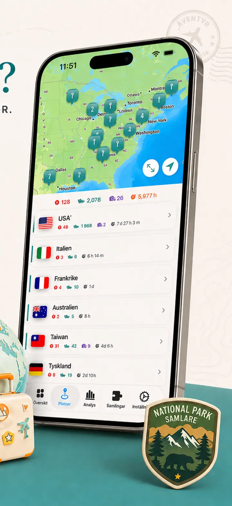
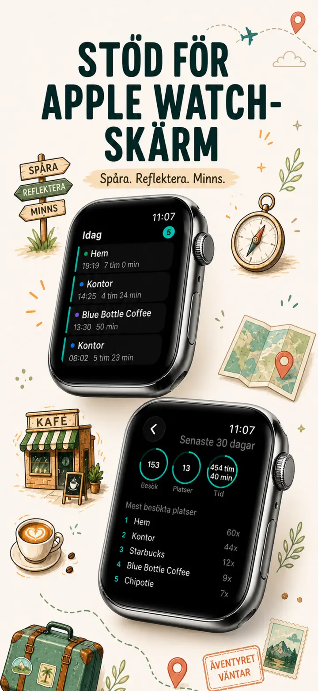
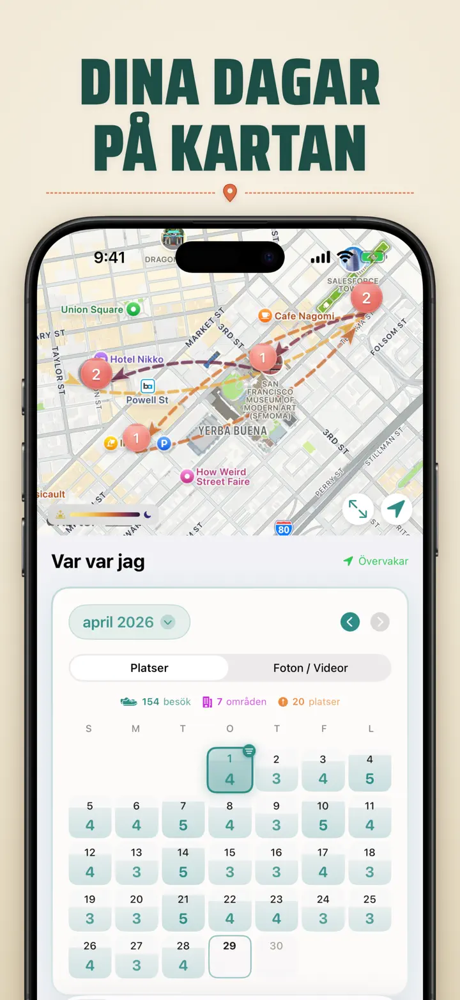
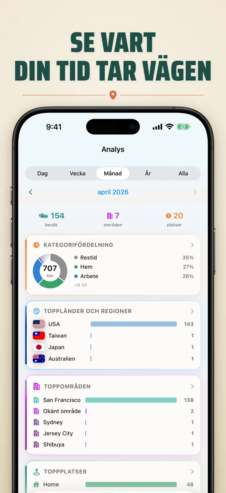
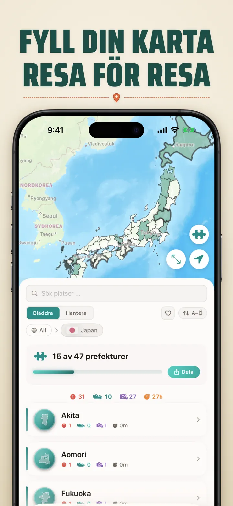
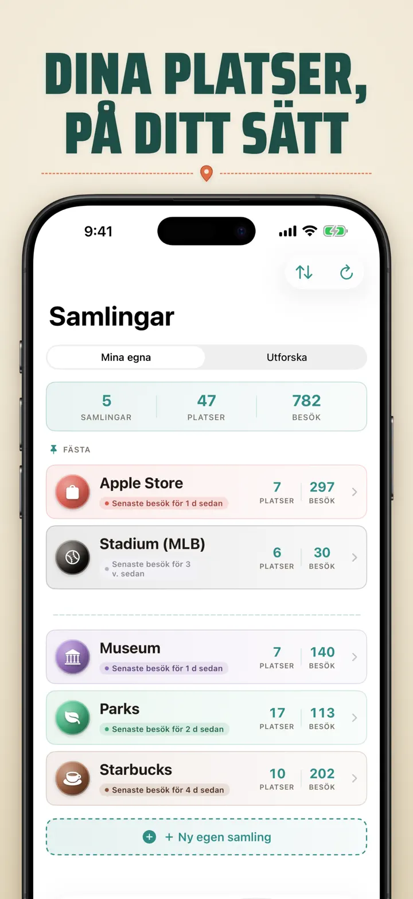
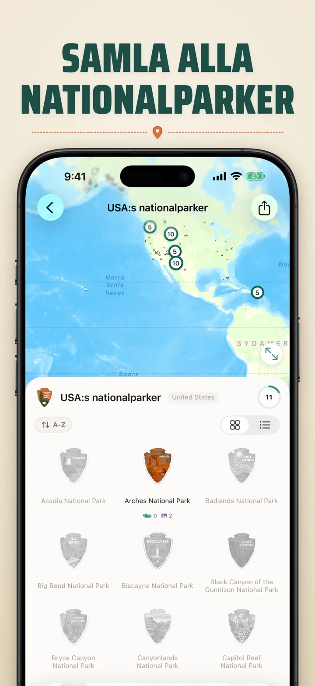
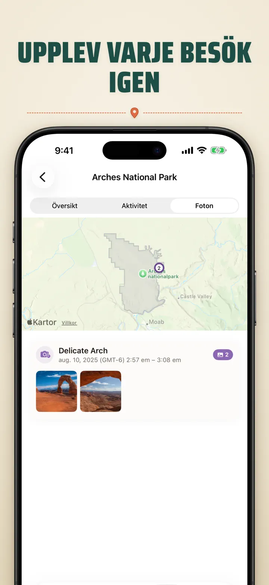

Var var jag?
Spåra platser/foton & resande
Nytt: Japans 103 Ichinomiya-helgedomar, var och en med sitt eget snidade märke. Automatisk besöksspårning och en privat tidslinje, allt på din enhet.
Hämta i App StoreOm appen
Where was I ? — Ditt personliga platsminne
Har du någonsin försökt komma ihåg den fantastiska restaurangen från förra månaden? Where was I ? spårar dina besök automatiskt och bygger en vacker tidslinje över ditt livs resa.
AUTOMATISK SPÅRNING
Ingen manuell loggning behövs. Appen registrerar tyst när du anländer till och lämnar platser, och skapar en detaljerad besökshistorik utan någon ansträngning från din sida.
SMART KALENDERVY
Se dina besök organiserade per dag, vecka eller månad. Den intuitiva kalendern visar besöksantal och unika platser med ett ögonkast. Tryck på valfri dag för att se exakt var du befann dig.
HEMSKÄRM- & LÅSSKÄRM-WIDGETAR
Se dina senaste besök med ett ögonkast med den medelstora hemskärmswidgeten. Låsskärmswidgetar visar din nuvarande plats, en live-vistelsetimer eller dagens besöksantal — alla tryckbara för att hoppa direkt in i appen.
ORGANISERADE PLATSER
Platser grupperas automatiskt efter region och stad. Tilldela egna kategorier som Hem, Jobb, Gym eller Café. Skapa dina egna kategorier med anpassade ikoner och färger som passar din livsstil.
KRAFTFULL ANALYS
Upptäck mönster i ditt liv:
- Tidsfördelning över kategorier
- Dina mest besökta platser
- Analys av veckorytmen
- Trender i besöksfrekvens
- Diagram över vistelsetid per plats — se hur länge du brukar stanna, per dag, vecka, månad eller år
LANDS-REGIONS-SAMLING
Gör dina resor till ett pussel! Se hur många delstater, provinser eller regioner du besökt i varje land. Dela dina framsteg som en pusselbild.
NATIONALPARKSFRAMSTEG
Utforska naturen! Logga dina besök i nationalparker automatiskt.
JAPANS 100 BERÖMDA SLOTT
Reser du i Japan? En ny inbyggd samling spårar dina besök till landets 100 berömda slott. Hittas i Samling-fliken → Utforska → Japan.
EGNA SAMLINGAR
Spåra vad du vill — Apple Stores, museer, bryggerier, bokhandlar. Skapa en samling, ange nyckelord och se den fyllas på automatiskt. Varje samling visar antal, besökshistorik och en karta.
IMPORTERA DIN PLATSHISTORIK
Kommer du från en annan app? Ta med dig hela din historik — formatet identifieras automatiskt, stora exporter hanteras och du ser en förhandsvisning innan något importeras:
- Google Timeline (Google Maps-export eller Google Takeout)
- Arc Timeline (de månatliga .json-filerna du exporterar från Arc)
- Moves (ProtoGeo / Facebook Moves-säkerhetskopia)
MASSHANTERING
Hantera alla dina platser på ett ställe. Sök, sortera och filtrera. Välj flera platser för att kategorisera eller ta bort dem i bulk. Håll ditt platsbibliotek rent och organiserat.
INTEGRITET FÖRST
Din platsdata stannar på din enhet. Inga konton krävs. Ingen data skickas till servrar. Dina rörelser är din ensak.
PERFEKT FÖR:
- Spåra arbetstider och platser
- Komma ihåg restauranger och butiker du besökt
- Analysera din dagliga rutin
- Föra resedagbok och logga nationalparksbesök
- Utläggsredovisning och milspårning
- Förstå din tidsallokering
FUNKTIONER:
- Automatisk ankomst- och avresedetektion
- Kalendervy med daglig besökstidslinje
- Hemskärm- och låsskärmswidgetar med deep-linking
- Platsgruppering efter region och stad
- Egna kategorier med ikoner och färger
- Smarta kategoriförslag från Apple Maps
- Detaljerad besökshistorik med varaktighet
- Diagram över vistelsetid per plats (dag / vecka / månad / år)
- Analysdashboard med insikter
- Sök och filtrera platser
- Lands-regions-samling med delbar pusselbild
- Nationalparksframstegsspårning
- Inbyggd samling Japans 100 berömda slott
- Egna samlingar med automatisk nyckelordsmatchning, manuell redigering och statistik
- Masshantering av platser
- Import från Google Timeline, Arc Timeline och Moves
- Exportfunktioner
- Inget konto krävs
- Integritetsfokuserad design
Börja bygga ditt platsminne idag. Ladda ner Where was I ? och glöm aldrig var du har varit.
Privacy Policy: https://masawata.net/privacy-policy.html Terms Of Service: https://www.apple.com/legal/internet-services/itunes/dev/stdeula/
Skärmavbilder








Var var jag?
Nytt: Japans 103 Ichinomiya-helgedomar, var och en med sitt eget snidade märke. Automatisk besöksspårning och en privat tidslinje, allt på din enhet.
Hämta i App Store